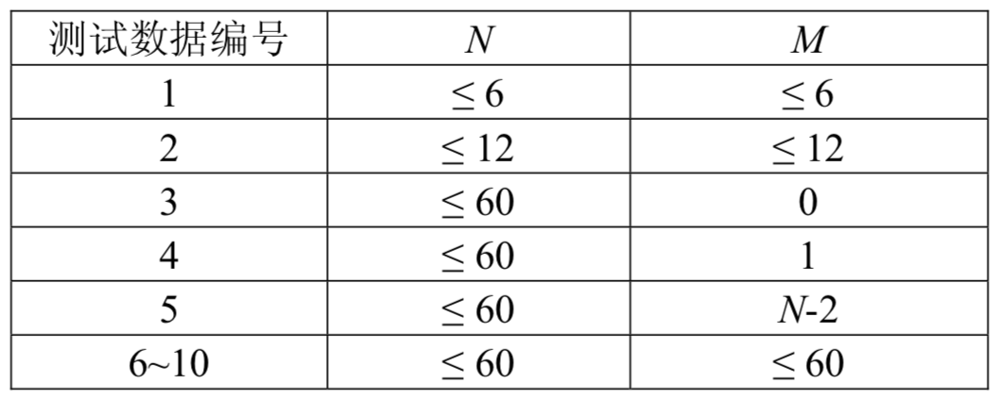

2008北京奥运会即将开幕，举国上下都在为这一盛事做好准备。为了高效率、成功地举办奥运会，对物流系统进行规划是必不可少的。
物流系统由若干物流基站组成，以$1...N$进行编号。每个物流基站$i$都有且仅有一个后继基站$S_i$，而可以有多个前驱基站。基站$i$中需要继续运输的物资都将被运往后继基站$S_i$，显然一个物流基站的后继基站不能是其本身。编号为1的物流基站称为控制基站，从任何物流基站都可将物资运往控制基站。注意控制基站也有后继基站，以便在需要时进行物资的流通。在物流系统中，高可靠性与低成本是主要设计目。对于基站$i$，我们定义其“可靠性”$R(i)$如下：
设物流基站$i$有$w$个前驱基站$P_1,P_2,\dots P_w$，即这些基站以$i$为后继基站，则基站$i$的可靠性$R(i)$满足下式：$R(i)=C_i+k\sum_{j=1}^{w}R(P_j)$其中$C_i$和$k$都是常实数且恒为正，且有$k$小于1。
整个系统的可靠性与控制基站的可靠性正相关，我们的目标是通过修改物流系统，即更改某些基站的后继基站，使得控制基站的可靠性$R(1)$尽量大。但由于经费限制，最多只能修改$m$个基站的后继基站，并且，控制基站的后继基站不可被修改。因而我们所面临的问题就是，如何修改不超过$m$个基站的后继，使得控制基站的可靠性$R(1)$最大化。
第一行包含两个整数与一个实数，$N,m,k$。其中$N$表示基站数目，$m$表示最多可修改的后继基站数目，$k$分别为可靠性定义中的常数。
第二行包含$N$个整数，分别是$S_1,S_2...S_N$，即每一个基站的后继基站编号。
第三行包含$N$个正实数，分别是$C_1,C_2...C_N$，为可靠性定义中的常数。
仅包含一个实数，为可得到的最大$R(1)$。精确到小数点两位。
4 1 0.5 2 3 1 3 10.0 10.0 10.0 10.0
30.00
【样例说明】
原有物流系统如图所示，4个物流基站的可靠性依次为22.8571，21.4286，25.7143，10。
最优方案为将2号基站的后继基站改为1号，如右图所示。 此时4个基站的可靠性依次为30，25，15，10。
【数据规模和约定】
本题的数据，具有如下分布：

对于所有的数据，满足$m≤N≤60，C_i≤10^6，0.3≤k< 1$，请使用双精度实数，无需考虑由此带来的误差。
 Comet OJ
Comet OJ